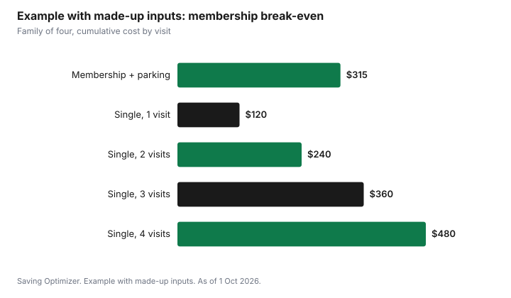

Entertainment · Canada
Is an Annual Membership Worth It? Zoo, Science Centre and Gallery Break-Even
An annual membership to a zoo, museum, science centre or gallery is worth it when you will visit more times in a year than the membership price divided by the all-in cost of one visit. Count tickets for everyone who goes, plus parking, and compare. For a family, the break-even is often two or three visits, because family memberships cover several people and parking can add a lot to each trip. Toronto Zoo, for example, lists 2026 family memberships for two adults and up to four children from $225.66 plus tax, with day parking at $20 a visit or an annual parking pass for $60. Be honest about how often you will really go, and check whether your library lends free passes first.
Key takeaways
- Break-even visits = membership price ÷ (tickets for your group + parking for one visit).
- Family memberships usually break even faster than individual ones because they cover several people.
- Toronto Zoo, as of 1 Oct 2026: Dual Family (2 adults + up to 4 children) $225.66 Silver, $292.04 Gold, $371.68 Platinum, plus tax.
- Parking can decide it: Toronto Zoo charges $20 a visit or $60 for an annual parking pass ($55 to renew).
- Guest passes, reciprocal discounts and member discounts on food and shops add value only if you use them.
- Example with made-up inputs: a family breaks even on its third visit.
Break-even
Start with the cost of one visit for the people who usually go. Use the price you would actually pay: many attractions now use date-based pricing. Toronto Zoo describes plan-ahead pricing where ticket prices vary by visit date and are lower when bought in advance. Add parking or transit. Then divide the membership price by that number.
| Line | Your numbers |
|---|---|
| Tickets for your usual group, one visit | |
| Parking or transit, one visit | |
| One visit, all-in | |
| Membership price (with tax) | |
| Break-even visits = membership ÷ one visit | |
| Visits you will realistically make in 12 months |
If the realistic number of visits is at or above break-even, the membership pays. If it is close, the extras below can tip it. If it is well below, buy single tickets or use a library pass.
A real price list: Toronto Zoo memberships
Toronto Zoo publishes three membership levels, Silver, Gold and Platinum, across six categories. All include year-round unlimited admission. The higher levels add benefits such as unlimited Zoomobile rides, two one-time guest passes, and, at Platinum, one unnamed guest per visit.
| Category | Silver | Gold | Platinum |
|---|---|---|---|
| Individual (1 named adult) | $97.35 | $128.32 | $212.39 |
| Dual (2 named adults) | $181.42 | $234.51 | $314.16 |
| Family (1 named adult + up to 4 children) | $181.42 | $234.51 | $314.16 |
| Dual Family (2 named adults + up to 4 children) | $225.66 | $292.04 | $371.68 |
| Senior (1 named senior, 65+) | $70.80 | $92.92 | $176.99 |
| Dual Senior (2 named seniors, 65+) | $123.89 | $159.29 | $238.94 |
| Add a child (ages 3 to 15) | $48.67 | $66.37 | $66.37 |
Toronto Zoo lists member benefits including a 10% discount on food and in gift shops at all levels, a renewal discount (10% at Silver, 15% at Gold and Platinum), discounts on education programs and camps, discounts at other zoos and aquariums, and member events. Only named members get the benefits, and adult members need photo ID with their card.
Parking
Parking is the cost people forget. Toronto Zoo charges $20 to park per visit, and sells an annual parking pass for $60 new or $55 on renewal. That means the parking pass pays for itself on the third visit by car. At a city museum, parking or transit may cost more or less; include whatever you will pay.
| Option | Price |
|---|---|
| Parking, per visit | $20 |
| Annual parking pass, new | $60 |
| Annual parking pass, renewal | $55 |
Reciprocal benefits and guest passes
Many memberships include discounts or free entry at other institutions. Toronto Zoo's page says its membership gives discounts at other zoos and aquariums and links to a list. Galleries and museums may belong to their own reciprocal networks; ask at the desk. These benefits matter if you travel to those places; check the list before counting them.
- Guest passes: worth the price of a ticket each if you will bring a friend or relative.
- Unnamed guest per visit: useful for single parents or families who often bring a friend.
- Food and shop discounts: only count them if you buy there anyway.
- Program and camp discounts: can be worth more than the membership for a child in summer camp.
- Renewal discounts: reduce year-two cost if you renew.
When to buy and renew
Timing matters because a membership runs for a fixed term. Toronto Zoo says new memberships and parking passes take effect from the date of purchase, and that if you renew before your membership expires, you do not lose any time because the new term starts after the current one ends. That means the best day to buy is the day of your first planned visit, not a few weeks before. If you are near break-even, buy at the start of the season when you will visit most, for example spring for a zoo, so the term covers the busy months.
A membership can also be a holiday gift for a family that already visits. Many attractions sell membership gift cards; Toronto Zoo's page links to one. Agree with the family first, since a membership only pays off if they will use it.
Choosing
| Your pattern | Best option |
|---|---|
| One visit a year | Single tickets or a library pass |
| Two visits, family of four, by car | Often close; run the numbers with parking |
| Three or more visits | Membership usually wins |
| A child in the attraction's camp | Membership for the camp discount |
| Visitors from out of town often | A level with guest passes |
Library passes can replace a membership for occasional visits. Toronto Public Library's tpl:map program offers free passes to arts and cultural attractions with an adult card, subject to availability; see free and cheap family outings.
Example with made-up inputs: a family of four
These numbers are an example with made-up inputs. They are not Toronto Zoo ticket prices. Two adults and two children drive to a zoo. Made-up tickets cost $100 for the family on a typical date, and parking is $20, so one visit costs $120. A family membership at a made-up $255 with tax, plus a $60 parking pass, costs $315. Break-even is 315 ÷ 120 = 2.6, so the family breaks even on the third visit. They plan four visits (spring, summer, a camp week pickup and a winter event), so the membership saves $165 over buying four visits at $120 ($480).
| Visits | Single visits (cumulative) | Membership + parking pass |
|---|---|---|
| 1 | $120 | $315 |
| 2 | $240 | $315 |
| 3 | $360 | $315 |
| 4 | $480 | $315 |

For other memberships that renew yearly, see amusement park season passes and memberships as gifts.
Sources
- Toronto Zoo, Membership, torontozoo.com, as of 1 Oct 2026. Categories and prices by level; benefits; effective from date of purchase; early renewal keeps remaining time; membership gift cards; parking pass $60 new and $55 renewal; named members and photo ID; reciprocal discounts list.
- Toronto Zoo, Plan your visit, torontozoo.com, as of 1 Oct 2026. Plan-ahead pricing varies by date; parking $20.
- Toronto Public Library, tpl:map Passes, tpl.ca, as of 1 Oct 2026.
- The family, ticket prices, membership price and totals in the example are an example with made-up inputs.
Frequently asked questions
How many visits make a zoo membership worth it?
Divide the membership price, plus any parking pass, by the all-in cost of one visit for your group. In a made-up example for a family of four, a $315 membership and parking pass broke even on the third $120 visit.
How much is a Toronto Zoo family membership?
As of 1 October 2026, Toronto Zoo lists a Dual Family membership (two adults and up to four children) at $225.66 Silver, $292.04 Gold and $371.68 Platinum, plus tax. Prices are subject to change.
How much is parking at the Toronto Zoo?
Toronto Zoo lists parking at $20 per visit and an annual parking pass at $60 new or $55 on renewal.
Do zoo memberships work at other zoos?
Toronto Zoo says its membership gives discounts at other zoos and aquariums and publishes a list. Check the list before counting the benefit.
Is a library pass better than a membership?
For one occasional visit, often yes. Toronto Public Library's tpl:map passes give free admission to some attractions with an adult card, subject to availability.
Researched and drafted with AI assistance and fact-checked against official Canadian sources. How we create content.
Disclosure: Saving Optimizer may earn a commission if a partner link is added later, such as a ticketing or cash-back offer type. No partnership with Toronto Zoo is claimed on this page, and no attraction is ranked. Education only. Prices are subject to change; check the attraction before buying.